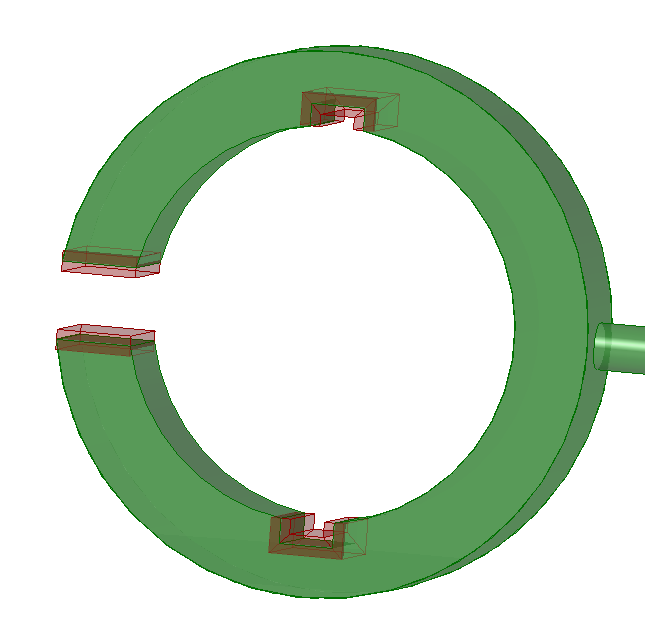

Preserve a region
Preserving regions of a body in a generative design study is part of the Generative Design workflow.
Define a region to preserve
Preserved regions are areas of the design space, such as a hole feature or a face, where the solution should not remove material in the optimization process.
-
Select Generative Design tab→Geometry group→Preserve Region .
-
Select one or more faces or one or more features.
-
In the dynamic input box, verify or enter an offset value to define the depth of the region being preserved. This is the additional material volume to preserve.
Tip:The Offset value that is displayed as a default is the recommended value based on the volume of the design space and the study quality.
This example shows preserved regions defined by selecting cutout features and faces. The additional material thickness of the preserved region is defined by the offset.

Editing preserved regions
Preserved regions are listed in the Generative Design docking pane, for example, as Region 1, Region 2, Region 3. You can rename them, hide and show them, and edit them using the shortcut menu on a selected region.
You also can double-click the Region 1 entry to edit the inputs that created it.